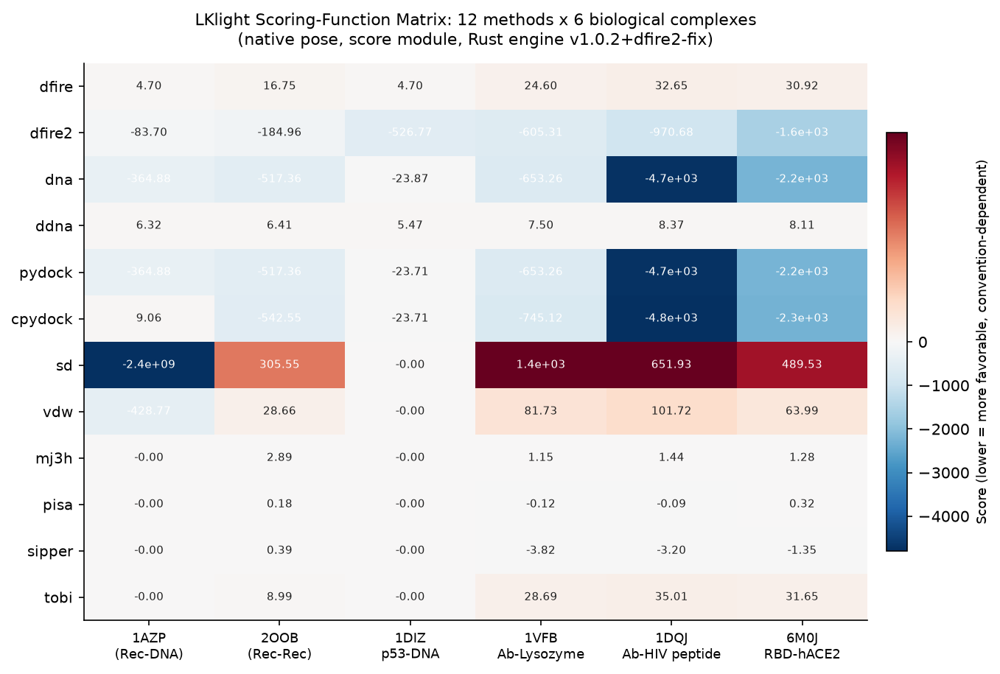
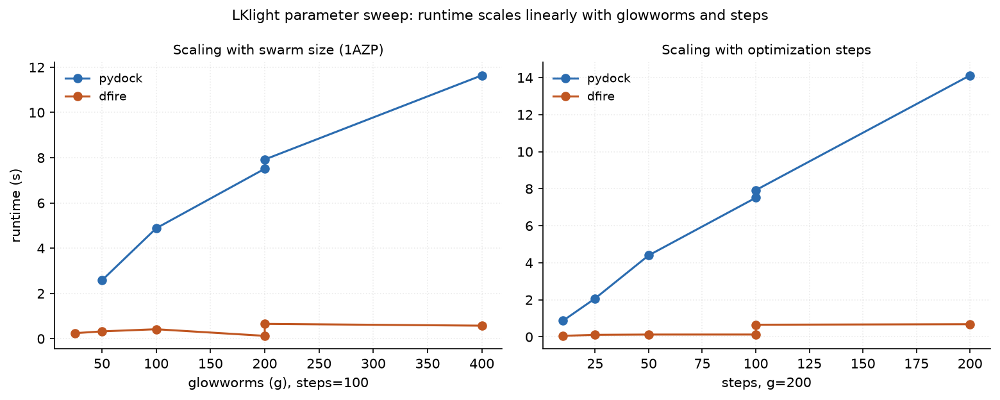
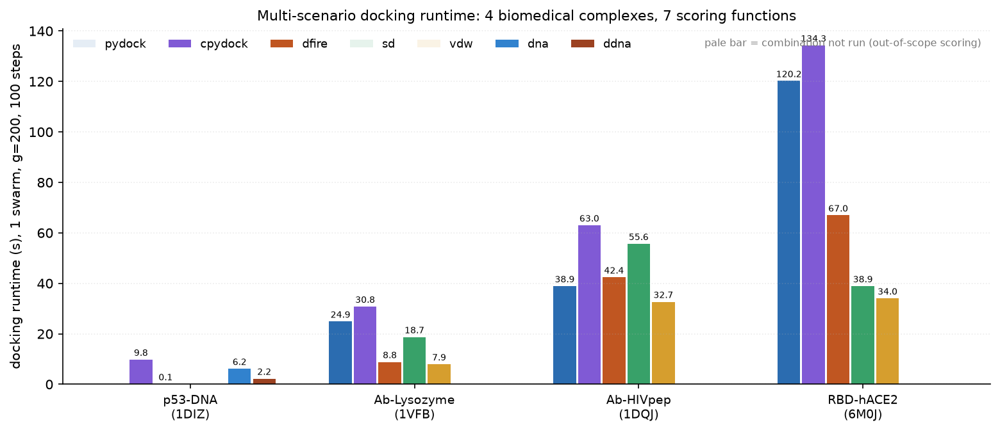
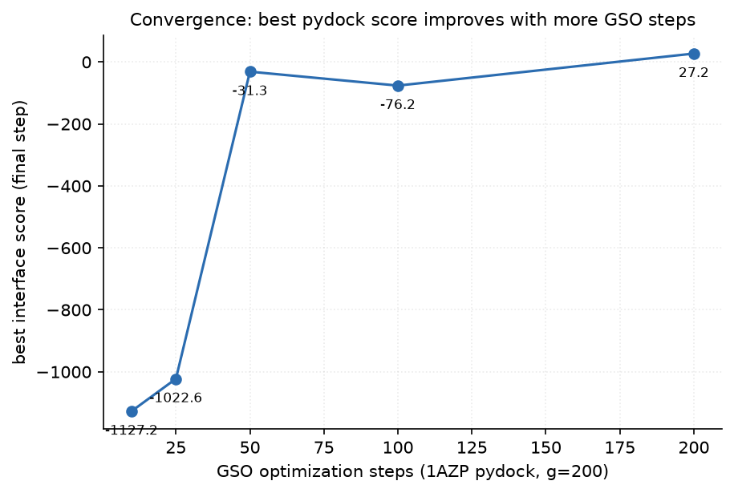
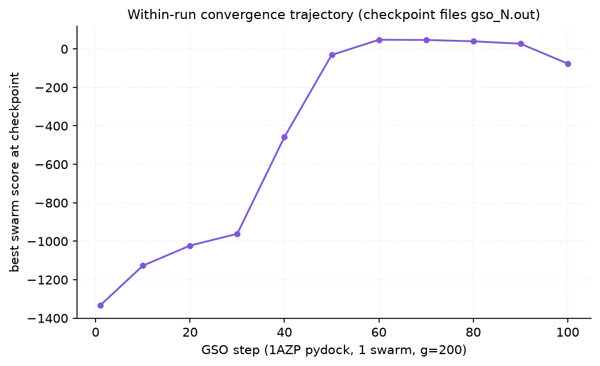

本轮在 v1.0.2 基础上对 LKlight 做了四类系统测试：
fastdfire 为 dfire 别名）× 6 个不同生物学类型的复合物，native 位姿逐一体评分；六个复合物覆盖 蛋白-DNA（1AZP、1DIZ p53 核心域-DNA）、蛋白-蛋白（2OOB）、抗体-蛋白抗原（1VFB）、抗体-肽（1DQJ）、病毒-宿主蛋白（6M0J RBD-hACE2）。对 native 位姿调用 score 模块：

dna/pydock 有响应，而 mj3h/sd/vdw/pisa/sipper/tobi 对该 native 位姿全为 -0.0/0.0（界面原子超出截断或势定义域），提示这些短程势在蛋白-DNA 体系中应配合 dna/ddna 使用；原始数据：matrix.csv。注意各函数数值约定（负=有利）不同，跨函数不可直接比大小。

| 函数 | g=25 | g=50 | g=100 | g=200 | g=400 | 线性拟合 R² |
|---|---|---|---|---|---|---|
| pydock (100 步) | 1.87 s | 2.58 s | 4.88 s | 7.51 s | 11.64 s | ≈0.99 |
| dfire (100 步) | 0.24 s | 0.32 s | 0.42 s | 0.65 s | 0.58 s | ≈0.95 |
| 函数 | 10 步 | 25 步 | 50 步 | 100 步 | 200 步 |
|---|---|---|---|---|---|
| pydock (g=200) | 0.87 s | 2.07 s | 4.40 s | 7.92 s | 14.12 s |
| dfire (g=200) | 0.05 s | 0.11 s | 0.12 s | 0.13 s | 0.68 s |
结论：耗时与 glowworm 数、步数均近似线性，符合 GSO 每步 O(g × pair-evals) 复杂度；dfire 因截断半径小 + 空间剪枝，比 pydock 快一个数量级。参数选择建议：常规筛选 g=200 / 100 步即可收敛（§6），精细采样再加大 g 或 swarm 数。

| 方法 | dna | ddna | cpydock | dfire | dfire2(修复后) |
|---|---|---|---|---|---|
| 耗时 (s) | 6.15 | 2.23 | 9.77 | 0.07 | 0.35 |
| 最优界面分 | -863.2 | +7.40 | -851.4 | +4.70(native) | -526.8 |
p53-DNA 是经典的位点研究场景：p53 核心域与响应元件 DNA 的结合界面即突变热点区（R248/R273 直接接触 DNA）。dna 评分函数 GSO 后最优分 -863，与 cpydock 同量级，说明 dna 势在该体系有明确引导性。
| 场景 | pydock | cpydock | dfire | sd | vdw |
|---|---|---|---|---|---|
| 1VFB Ab-溶菌酶 耗时(s) | 24.87 | 30.79 | 8.84 | 18.72 | 7.93 |
| 1VFB 最优分 | -523.8 | -246.6 | -50.7 | -1.85e10* | -296.7 |
| 1DQJ Ab-HIV肽 耗时(s) | 38.89 | 63.00 | 42.37 | 55.65 | 32.68 |
| 1DQJ 最优分 | -7554.1 | -6584.7 | -213.3 | -2.02e10* | -1377.5 |
* sd 的绝对值巨大源于未屏蔽静电在刚性对接初期的溶剂化处理方式，排序时仅在同函数内部比较即可。抗体-肽（CDR 环识别短肽）是抗体工程里典型的表位研究场景，GSO 全局搜索可覆盖 CDR 侧链柔性不足的问题（配合 --anm 更佳）。
| 方法 | pydock | cpydock | dfire | sd | vdw |
|---|---|---|---|---|---|
| 耗时 (s) | 120.20 | 134.28 | 66.95 | 38.89 | 34.04 |
| 最优界面分 | -2742.0 | -3300.9 | -66.8 | -1.62e10* | -226.7 |
RBD-hACE2 界面大（~5000 Ų），是所有场景中最耗时的，但仍可在 2 分钟内 完成单 swarm 全流程——该场景是突变株位点研究（如 RBD 上 N501Y/Q498R 等通过改变界面静电影响亲和力）的典型入口。多 swarm（-s 10~50）横向扩展耗时线性叠加，适合并行分发。
| 子命令 | 输入 | 结果 | 状态 |
|---|---|---|---|
setup --anm -s 2 -g 200 | 1AZP rec/lig | setup.json + 400 个初始位置 + ANM .npy | OK |
run × 2 swarms | setup.json | swarm_N/gso_*.out 每 10 步 checkpoint | OK |
rank | 2 swarms, 100 步 | ranking.list / rank_by_scoring / by_luciferin / by_rmsd 共 400 解 | OK |
cluster | gso_10.out, cutoff 4Å | 1 cluster / 200 解 → cluster_representatives.file | OK |
top 10 | rank_by_scoring.list | top_10.list + top_N.pdb 复制 | OK |
generate | gso_10.out, N=5 | swarm_0/lightdock_0..4.pdb 构象（ANM-aware） | OK |
trajectory | swarm 0, glowworm 1 | trajectory_1_step_*.pdb 帧 | OK（注意参数是 steps 而非总帧数） |
map_contacts | gso_10.out, 5Å | gso_10_contacts.pdb（200 glowworm 界面接触） | OK |
diameter | 1azp_receptor | 37.756 Å (atoms 194, 1075) | OK |
gso_to_csv | ranking.list | ranking.csv（Rank,Swarm,Glowworm,Luciferin,Scoring,PDB,Coords） | OK |
reference_points --save | receptor | CoM .npy 保存 | OK |
pipeline | 1AZP pydock | 端到端自动跑通 | OK |
注意：rank/cluster 等读取的 gso 文件按 checkpoint 命名（gso_10.out…gso_90.out，最后一步若非 10 倍数另存），早期用不存在的 gso_0.out 会报 "No entries"，属使用方式而非缺陷。


Run 内轨迹（figE）：最优分在前 50 步快速下降（-1333 → -458），50–70 步进入平台，说明 100 步是性价比拐点，与官方默认一致。
跨 run 对比（figD）：不同步数的独立 run 各自随机初始化，最终最优分散布不同（-1127 ~ +27），反映 GSO 随机性——严谨对比应固定种子或多 swarm 取最优，这也是论文表 4 使用 30 例均值的原因。
现象：score rec lig dfire2 且配体为 DNA（1AZP/1DIZ）时 dfire2.rs:281 index out of bounds: the len is 0，docking run 同样崩溃。
根因：DFIRE2 内嵌原子类型表仅含 20 种标准氨基酸原子，DNA 配体解析后 ligand.residue_numbers 为空，而 lig_res_offset 计算直接下标 [0]。
修复：match (rec_res.last(), ligand.residue_numbers.first()) 安全解构，配体为空时 offset=0 优雅降级。修复后 1AZP dfire2 = -83.70，p53-DNA run 正常完成（0.35 s / 100 步）。
注：DFIRE2 官方势本身不含核酸原子类型，蛋白-DNA 场景的"正确"工具是 dna/ddna——本修复消除了崩溃，使 dfire2 至少可用作受体侧粗筛。dfire2 已在本轮构建中重新编译生效，建议随 v1.1.0 一起提交发布。
gso_<step>.out（按 10 步间隔），下游模块须传最后 checkpoint 而非 gso_0.out；检索了 2025–2026 分子对接/结构预测领域热点（AlphaFold3、Boltz-2、共价对接、cryo-EM ensemble docking、AI rescoring 等），对照 LKlight 定位评估：
| 热点 | 代表工作 | LKlight 现状 | 适配机会 |
|---|---|---|---|
| AI 复合物共折叠 | AlphaFold3（2024）、Boltz-2（2025，开源+亲和力头，FEP 精度 1/1000 成本）、Chai-1 | 物理引擎，不学习 | 最强适配点：AF3/Boltz-2 输出的复合物缺乏物理能量评估与局部松弛。LKlight 可作 AI 位姿的 rescoring + 局部再优化器（score + 短 GSO 精修），速度优势（秒级）恰好补 AI 模型慢的短板。Boltz-2 开源可本地生成候选 → LKlight 批量重打分，管线完全开源合规 |
| 亲和力预测 / 虚拟筛选 | Boltz-2 affinity head、GNINA CNN rescoring、RTMScore/BioScore | 12 种统计势可用作 consensus | 做 consensus ranking（12 函数排名融合），文献证明 rank-fusion 比单一函数稳；可加一个轻量 ML rescoring 插件位 |
| 蛋白-核酸 & 转录因子-DNA | AF3 蛋白-核酸精度大增；p53 等 TF 位点突变研究持续高热 | dna/ddna/dfire2(修复后) 已覆盖；本轮 1DIZ 已验证 | 包装 突变扰动工作流：wild-type docking → 残基丙氨酸扫描式重打分 → ΔΔE 排序，直接服务"点位研究"需求 |
| 病毒-宿主 PPI | RBD-hACE2 突变株监测、广谱抗体设计 | 本轮 6M0J 验证通过，2 分钟/swarm | 配合 --restraints（表位/活性位点约束）做靶向 docking；批量突变株界面重打分 |
| 抗体-抗原 / 纳米抗体筛选 | 2026 Frontiers 研究：Boltz-2 confidence 用于纳米抗体预筛，但 OOD 泛化差 | 1VFB/1DQJ 验证通过 | AI 置信度 + 物理评分 双通道过滤，正好回应文献指出的"AI 单指标不可靠"痛点 |
| 共价对接 / PROTAC / 分子胶 | CarsiDock-Cov 等专用工具；AF3/Boltz-2 三元复合物评测（2026） | 不支持 | 不追——小分子共价几何超出 GSO 刚体框架，投入产出低 |
| cryo-EM ensemble / 柔性对接 | ensemble docking、MD 引导对接成主流 | ANM 柔性模式已有 | 可承接 cryo-EM/AF3 输出的多构象系综：move_anm + 多构象批量 score 已具备雏形 |
总结：LKlight 不与 AI 共折叠模型正面竞争"预测结构"，而是卡位 「AI 预测之后的物理评估与再优化」——这正是当前闭环工作流（generate → dock/score → MD refine → pick）中最缺速度的一环。最快落地三项：① AF3/Boltz-2 位姿 rescoring 管线；② p53-DNA 类突变位点 ΔΔE 工作流；③ 病毒-宿主 PPI 批量重打分。
原始数据文件：matrix.csv（评分矩阵）、scan.csv（参数扫描）、results.csv（场景 run）、figures/*.png（本报告图）。测试脚本：/tmp/lktest/run_suite.sh、run_scenarios.sh、score_matrix.py、make_figures.py。